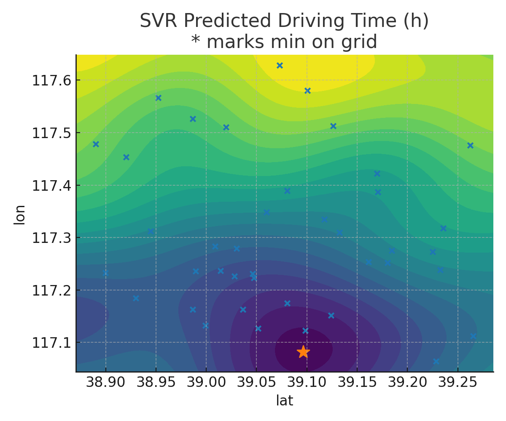
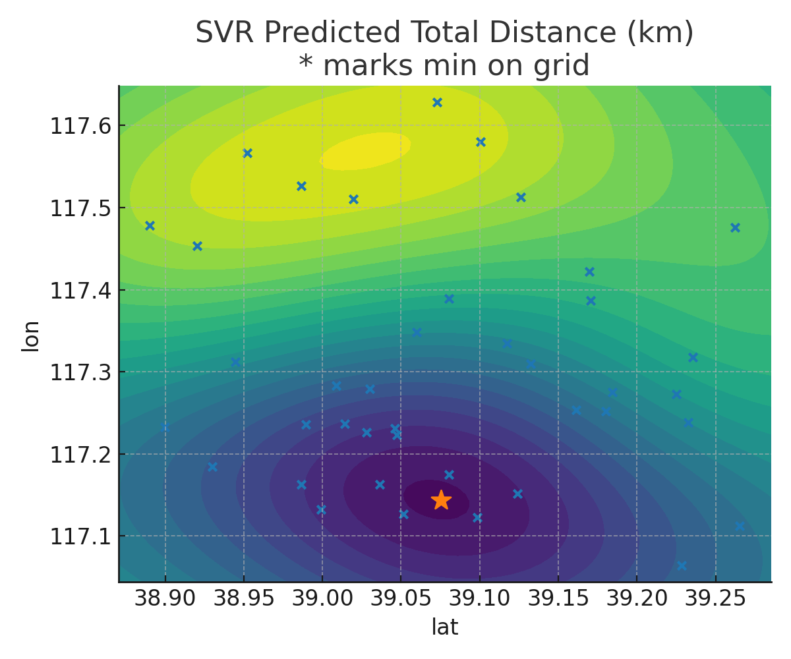
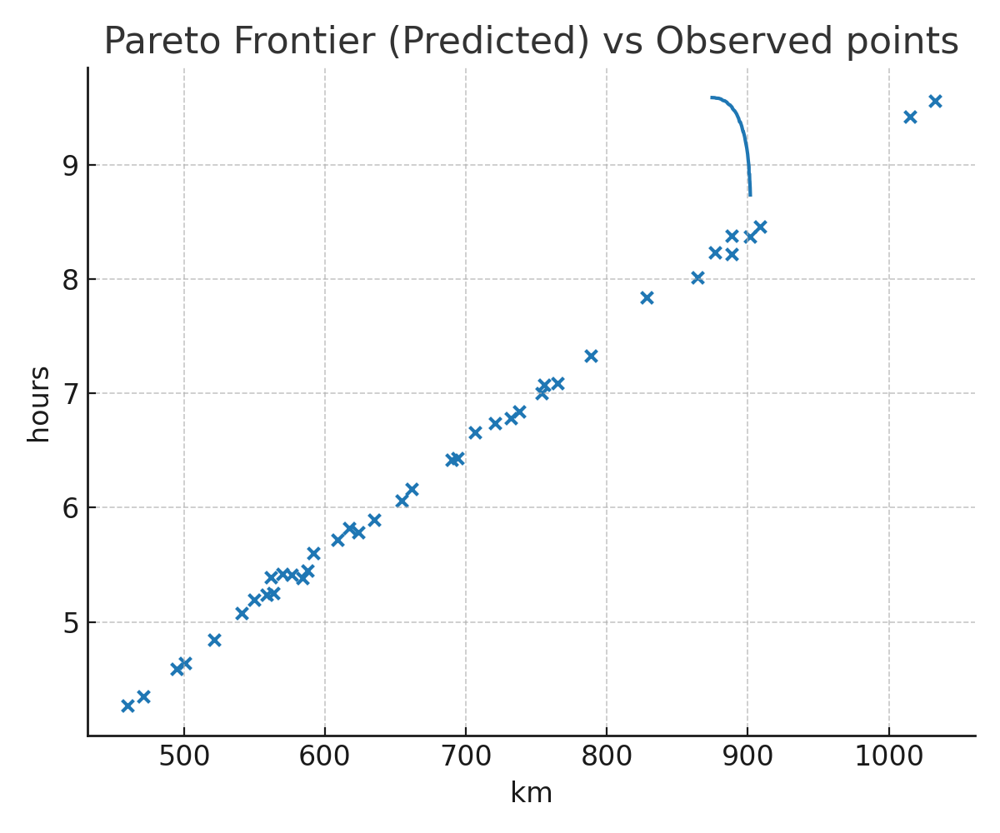
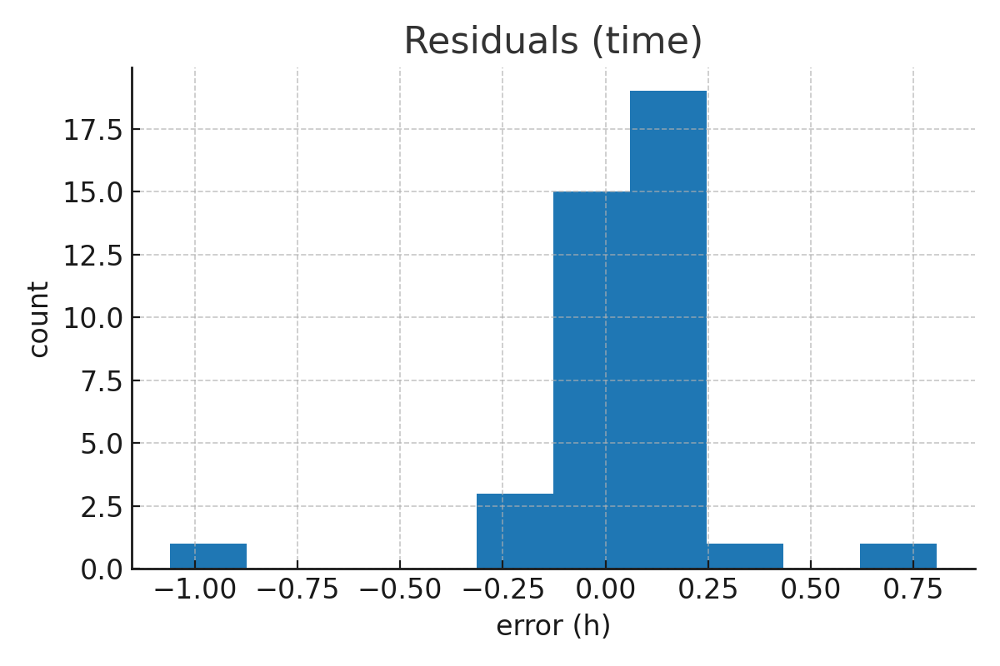
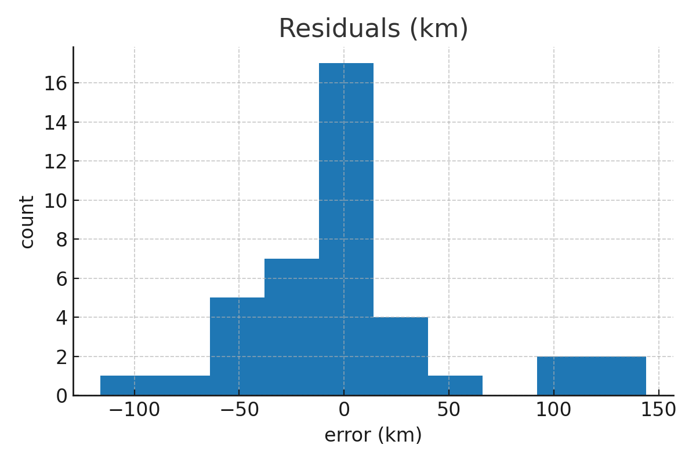
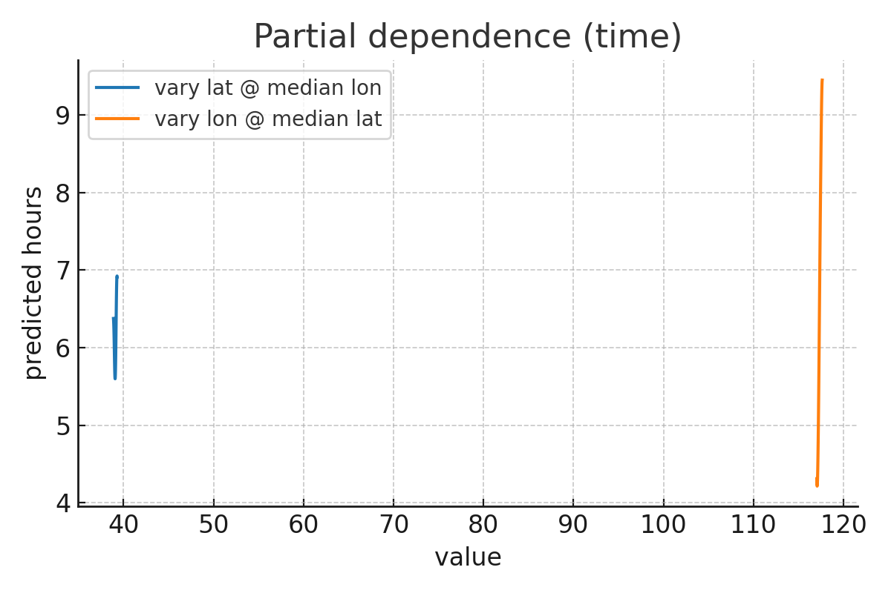

Hongye Li's Research Project for Tianjin Qiyue New Energy Project Management Co., Ltd.
DISTRIBUTION CENTER PLACEMENT
STRATEGY FOR HVAC LOGISTICS IN
TIANJIN
GIS Simulation · Support Vector Machine Algorithm
Interactive Simulation
Support Vector Machine · Key Visualizations





